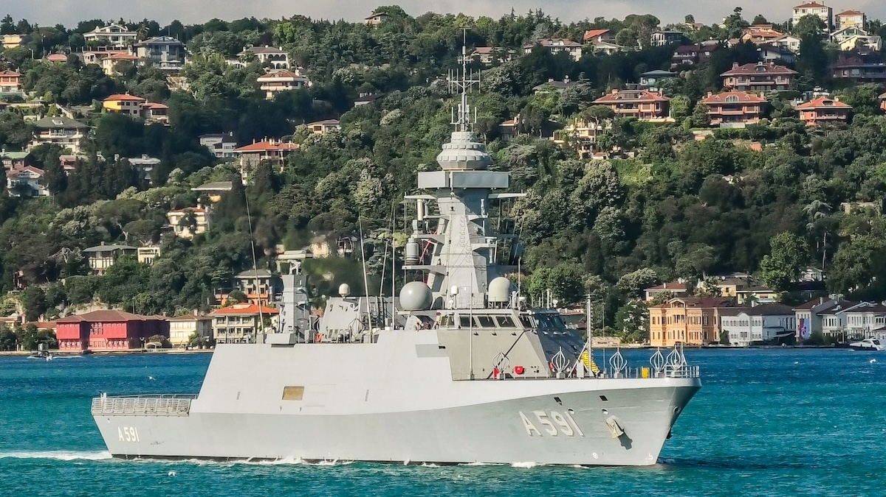
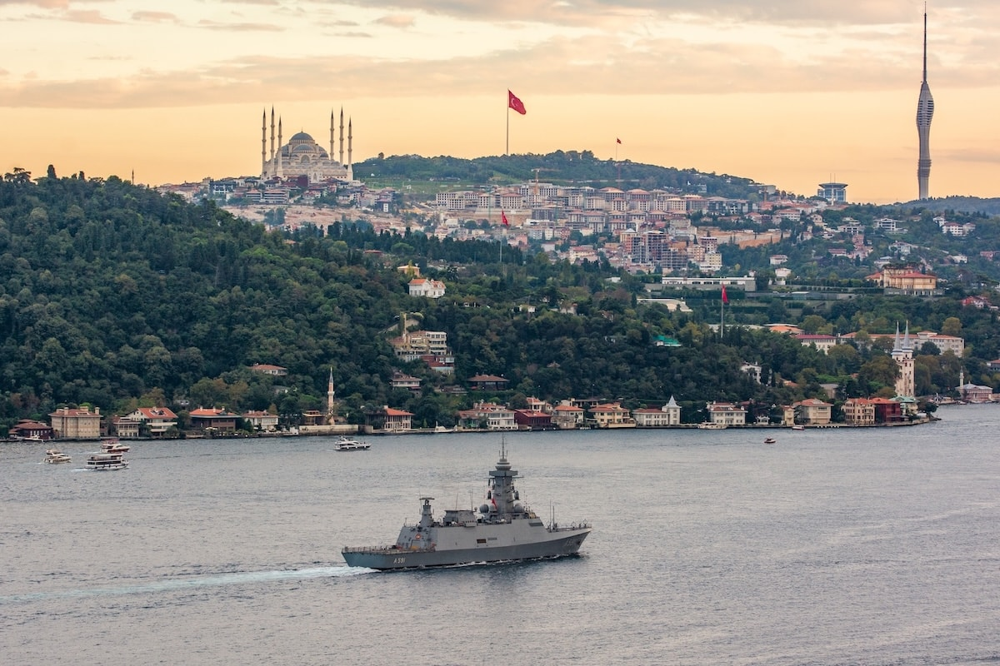
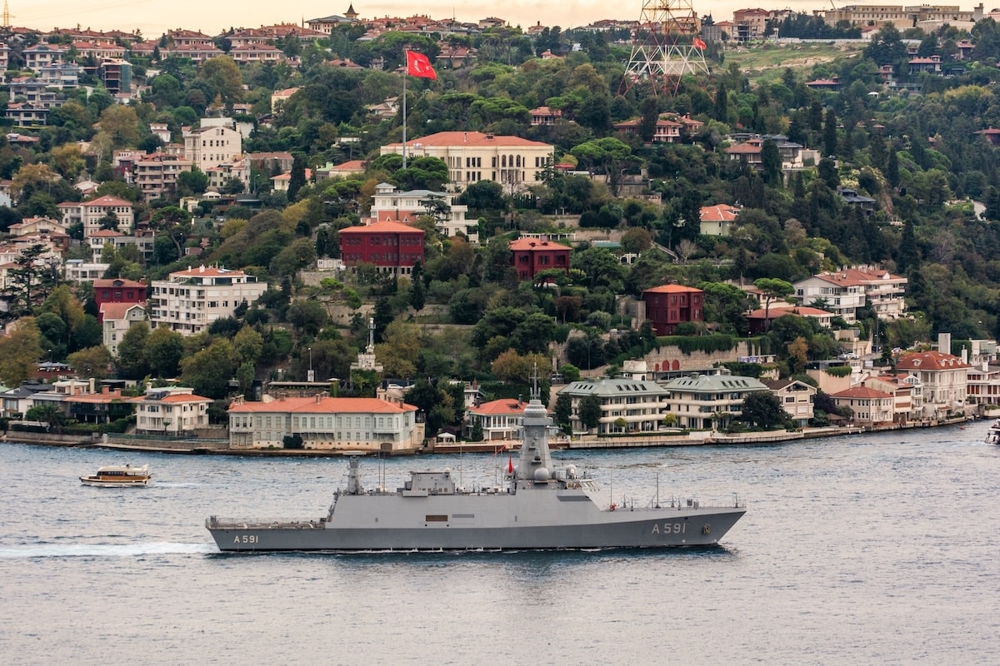

❮
❯
TCG Ufuk (A-591), Türk Deniz Kuvvetleri için geliştirilen test ve istihbarat gemisidir. Geminin ana görevi elektronik istihbarat toplamak, radar sistemlerini test etmek ve elektronik harp alanında veri elde etmektir.
Platform; radar, haberleşme sistemleri ve elektronik sinyal analiz ekipmanları ile donatılmıştır. Bu sayede radar emisyonları, haberleşme sinyalleri ve elektronik spektrum faaliyetleri analiz edilebilmektedir.
TCG Ufuk ayrıca deniz platformlarında kullanılan radar ve sensör sistemlerinin test edilmesi için de kullanılmaktadır.



| Gemi Türü | Test ve İstihbarat Gemisi |
| Görev Tanımı | Elektronik İstihbarat (ELINT / SIGINT) |
| Gemi Adı | TCG Ufuk |
| Borda Numarası | A-591 |
| İnşa Tersanesi | İstanbul Tersanesi Komutanlığı |
| Hizmete Giriş | 2022 |
| Tam Boy | 99.5 metre |
| Genişlik | 14.4 metre |
| Draft | ≈3.6 metre |
| Deplasman | ≈2400 ton |
| Tahrik Sistemi | Dizel motor |
| Azami Hız | ≈18 knot |
| Menzil | ≈4500 deniz mili |
| Mürettebat | ≈130 personel |
| Elektronik İstihbarat | ELINT / SIGINT sistemleri |
| Radar Test Görevleri | Radar emisyon analiz sistemleri |
| Elektronik Harp Analizi | Sinyal analiz sistemleri |
| Görev Türleri |
Elektronik istihbarat Radar test görevleri Sinyal analiz operasyonları Elektronik harp araştırmaları |